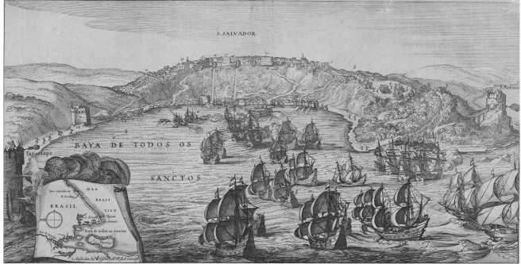
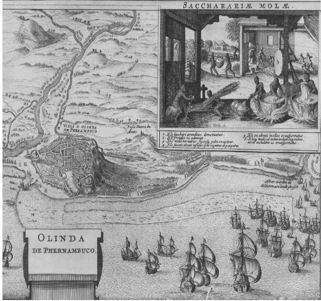
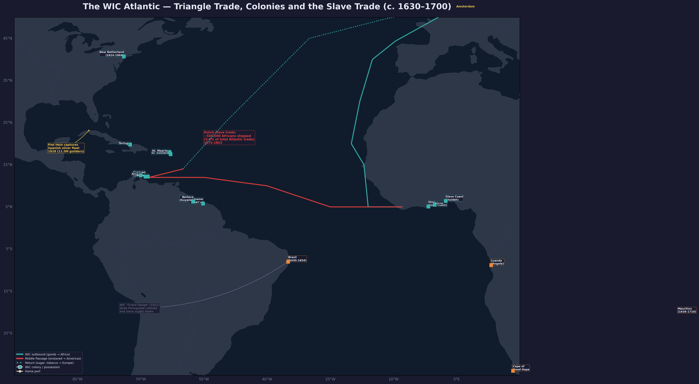
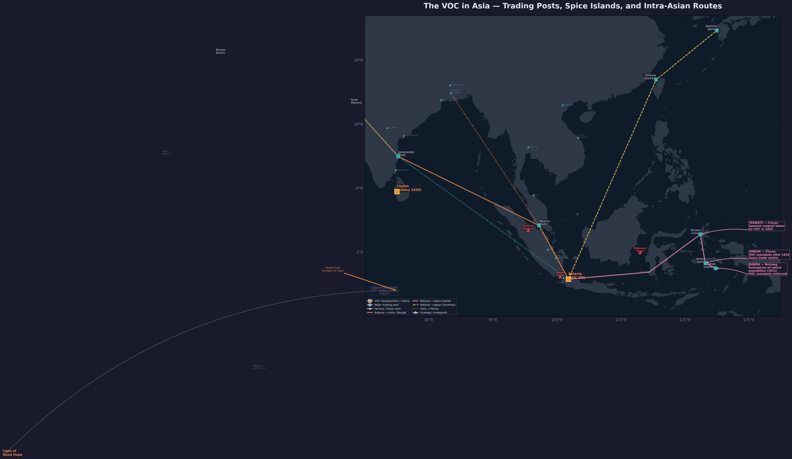

Colonial trade and the West India Company — Dutch involvement in Atlantic commerce and the slave trade.

Enslaved labourers working on a sugar plantation in Dutch Brazil. Detail from a map of Olinda by Wenceslaus Hollar, 1657-60.

The WIC Atlantic world c. 1630-1700: the triangle trade outbound (teal), Middle Passage (red), and return route (teal). WIC colonies spanned Brazil (1630-54), New Netherland, Suriname, the Caribbean islands, and the West African coast (Elmina, Slave Coast).

VOC Asia network — the eastern arm of the Dutch colonial empire, stretching from Persia to Japan with Batavia as the nerve centre.

The Dutch trade empire c. 1650: VOC route to Asia (orange), WIC Atlantic triangle (teal), Middle Passage slave trade (red), Baltic grain route (gold), and Norwegian timber (pink). Squares = colonial possessions; triangles = strategic chokepoints.
Dutch Colonial Empire (WIC, Atlantic, Slavery)
The Dutch colonial empire operated through two distinct corporate entities: the VOC (East India Company) in Asia and the West India Company (WIC) in the Atlantic. Though the two companies shared the same federal structure and sovereign powers — to wage war, build forts, and conclude treaties — they pursued very different colonial strategies. The VOC, capitalized at 6.4 million guilders in 1602, built a territorial empire in Asia centred on Batavia, the spice monopoly, and an intra-Asian trading network stretching from Persia to Japan. The WIC, chartered in 1621, was conceived as a military-commercial enterprise with the “grand design” of seizing Portuguese plantation colonies and their slave-supply bases. ^[source: raw/masselman-cradle-of-colonialism.txt, Preface]
The Dutch colonial empire in the Atlantic was built by the West India Company (WIC, or Westindische Compagnie) after the expiry of the Twelve Years’ Truce. The WIC’s Atlantic empire encompassed Brazil (1630–1654), New Netherland (New York, 1624–1664), a string of Caribbean islands including Curacao, Aruba and Bonaire, and eventually the plantation colony of Suriname, acquired in 1667. The Asian arm — the VOC’s network of fortified trading posts, spice-producing islands, and territorial possessions — is covered in detail on the VOC, Batavia, Spice Trade, and Anglo-Dutch Rivalry pages. ^[source: raw/prak-dutch-republic-17th-century.txt]
The West India Company (WIC)
The WIC was established in the wake of Piet Hein’s legendary capture of the Spanish silver fleet in the Bay of Matanzas, Cuba, in September 1628 — a haul worth 11.5 million guilders, half of which went to the States General and the rest to WIC shareholders, who until then had seen little return. The company’s charter gave it a monopoly on Dutch trade with the Americas and West Africa, along with the same sovereign powers — to wage war, build forts, and conclude treaties — that the VOC enjoyed in Asia. The WIC was organised along similar federal lines to the VOC, with chambers in Amsterdam, Zeeland, and other provinces. Its initial capital was raised with difficulty, as potential investors were wary after the VOC’s long years before paying dividends. The company’s operations mixed privateering, trade, and territorial conquest. ^[source: raw/prak-dutch-republic-17th-century.txt]
Brazil (1630–1654)
The WIC’s most ambitious venture was the conquest of Brazil. After an initial failed attack on Bahia (1624), Piet Hein’s silver fleet victory provided funds for a second attempt. In 1630 the Dutch captured the harbours of Olinda and Recife in the northern province of Pernambuco. In 1637 the WIC appointed Johan Maurits of Nassau-Siegen as governor-general. A military commander by training, Johan Maurits substantially expanded Dutch-held territory and brought with him artisans, artists, and scientists to study the colony. Between 1637 and 1642 the WIC captured or established six bases on the African coast to secure the supply of enslaved labour. Between 1641 and 1648, approximately 14,000 Africans were shipped by Dutch traders to Central and South America, destined for work on the sugar plantations. The Brazil project collapsed after 1640, when Portugal rebelled against Spain and the Portuguese planters who constituted the majority of the European population in Dutch Brazil rose in revolt. The WIC spent over 6 million guilders in States General subsidies between 1645 and 1651 trying to suppress the rebellion, but the final blow came in 1653–54, when the Republic was at war with England and could not defend a second front. The Portuguese recaptured Recife in 1654, ending Dutch Brazil. ^[source: raw/prak-dutch-republic-17th-century.txt]
The Atlantic Slave Trade
The Dutch involvement in the African slave trade was directly connected to their Brazilian colony. To keep the plantation economy running, the WIC captured the Portuguese fortress of Sao Jorge da Mina (Elmina) on the Gold Coast in 1637, along with other West African bases, enabling a rapid expansion of the Dutch slave trade. Curacao (conquered 1634), together with Aruba and Bonaire, became the foremost distribution centres of the Dutch slave trade, supplying enslaved Africans to Spanish, English, and French colonies in the Caribbean. The WIC was only one participant: approximately 40 per cent of Dutch slave traders were merchants operating on their own account, many of them Sephardic Jews from the Portuguese-Jewish community in Amsterdam and Zeeland. Over the whole of the 17th century, nearly 250,000 people were involuntarily transported by the Dutch from Africa to the Americas, and more than 350,000 were added in the 18th century — a total of approximately 600,000 enslaved Africans shipped under the Dutch flag. The trade raised moral questions even at the time: the Zierikzee minister Godfried Udemans, in his 1638 handbook ‘t Geestelyck roer van’t coopmans schip (The Spiritual Oar of the Merchant’s Ship), wrestled with whether the slave trade was justifiable, concluding that heathens and Muslims could be enslaved if captured in a just war or sold for a fair price — a theological rationale that helped legitimise human trafficking. ^[source: raw/prak-dutch-republic-17th-century.txt]
New Netherland (New York)
In North America, the WIC stimulated settlement in the territory explored by Henry Hudson (sailing for the VOC in 1609) along the river that bears his name. From 1621 onward, the WIC promoted colonisation in the region, hoping for a flourishing trade in beaver skins used for fur-lined coats and caps in Europe. The largest settlement was New Amsterdam, where more than 2,500 Europeans lived by the mid-17th century, with another 1,000 in Beverwijck (Albany) and colonists scattered across some twenty rural settlements. Relations with Native Americans were characterised by violence and mutual incomprehension: colonists referred to them as “savages” (wilden), saw no recognisable religion in their societies, and fought a bloody war in 1643–44 in which Dutch raiders attacked at night and killed women and children. The wall built to protect New Amsterdam from reprisals gave its name to Wall Street. New Netherland was captured by the English in 1664 during the Second Anglo-Dutch War and became New York. ^[source: raw/prak-dutch-republic-17th-century.txt]
Suriname
After the loss of Brazil, Dutch colonists moved to the “Wild Coast” north of Portuguese Brazil, where Zeelanders had established plantations along the Essequibo and Berbice rivers as early as 1616 and 1627. In February 1667, a Zeeland squadron under Abraham Crijnssen captured the English fort at the mouth of the Paramaribo River. The Treaty of Breda (1667) confirmed the exchange: the English kept New Netherland (New York) while the Dutch received Suriname, a region offering better opportunities for sugarcane cultivation. Building a viable plantation society proved difficult: few Dutchmen wished to emigrate. Portuguese Jews from Brazil, French Huguenots, Germans, and Swiss provided the settler base. In 1683 the Society of Suriname was formed, with the WIC, the city of Amsterdam, and Cornelis van Aerssen van Sommelsdijk each holding one-third. Van Aerssen, appointed governor-general, pursued religious toleration and brought in enslaved Africans. The number of plantations rose from 50 in 1683 to 200 thirty years later. Van Aerssen was murdered by mutinous soldiers in 1688. Suriname became the most important Dutch plantation colony in the Americas, firmly embedded in the Atlantic economy through trade with Barbados, New York, and New England. ^[source: raw/prak-dutch-republic-17th-century.txt]
Trade Volumes and Commodity Flows
De Vries and van der Woude provide the most comprehensive quantitative reconstruction of the Dutch Atlantic economy. Their data reveal a cycle of boom, collapse, and gradual recovery across the seventeenth and eighteenth centuries, driven by the interplay of colonial production, mercantilist restrictions, and financial innovation.
Brazil-era collapse and deregulation. The loss of Dutch Brazil (1654) left the WIC hopelessly in debt after losses of 3 million guilders per year in the colony, plus massive defaults on slave-trade credits extended to planters. By 1648 the Brazil trade and most other New World trades were thrown open to all Dutch merchants. In this deregulated setting, a new system emerged: the WIC specialised in the African slave trade; Dutch merchants financed sugar production on foreign-owned islands (Barbados, Martinique, the Spanish possessions); and Amsterdam’s sugar refineries processed colonial imports regardless of origin. Sugar shipments to the Republic quickly recovered to Brazilian-era levels. By 1660 the Republic’s 66 sugar refineries — 50 of them in Amsterdam — supplied more than half of all refined sugar consumed in Europe. But English and French mercantilist restrictions soon squeezed Dutch access: Amsterdam’s sugar refineries fell from 66 to 34 in 1668, and to only 20 in 1680. ^[source: de Vries & van der Woude, Ch. 10.4.1]
Wild Coast expansion and the Surinam boom. The third Dutch Atlantic initiative centred on the Wild Coast settlements. Between 1684 and 1713, the slave population of Surinam grew nearly fourfold, and sugar exports rose from approximately 3 million pounds to 15 million pounds. By 1713, 171 sugar plantations were active in Surinam, with an additional 20 in Essequibo and Demerary. The period 1713-40 saw the number of plantations triple, financed by Amsterdam commission houses. By 1750 the Dutch plantations were sending annually some 18 to 20 million pounds of sugar and 6 million pounds of coffee to the Republic, valued at around 6 million guilders. The Republic’s 145 sugar refineries (90 in Amsterdam) re-exported the bulk of their production, supplementing every pound of colonial sugar with two pounds imported from France — some 28 million pounds of French raw sugar in 1751. ^[source: de Vries & van der Woude, Ch. 10.4.2]
Peak production in the 1760s-70s. In the decade 1765-74, the plantation economies reached their peak, with some 60,000 slaves working 465 plantations in Surinam alone, plus at least 240 plantations and perhaps 25,000 slaves in Essequibo, Demerary, and Berbice. Chief exports fetched an annual average of 12 million guilders in the Republic. In 1775-8 the Republic imported a record 71 million pounds of sugar annually — though only 18 million came from Dutch plantations; the rest arrived via France. Coffee cultivation boomed: by 1775-8 Dutch imports totalled 36 million pounds, six times the 1751 level, of which 21 million came from Dutch plantations. By the 1760s-70s, Surinam and Guiana sugar and coffee, supplemented by indigo, cotton, and cacao, filled the holds of some eighty ships per year. ^[source: de Vries & van der Woude, Ch. 10.4.2]
Market share and marginalisation. The Dutch colonial sugar production of the 1680s accounted for about 8 percent of total Caribbean output (30 to 32 million kg). By the 1750s, the spectacular growth of French Saint Domingue reduced the Dutch share to under 6 percent, and by 1775 to under 5 percent of a total of 200 million kg. The volume of shipping from all West Indies origins to Zuider Zee ports grew at an average annual rate of nearly 2 percent from the 1710s to the 1770s, while the value of Dutch plantation exports grew at 2.8 percent per year — the most dynamic sector of Dutch trade in the eighteenth century. Yet the British and French Atlantic economies were vastly larger and grew faster. ^[source: de Vries & van der Woude, Ch. 10.4.2 and Table 10.11]
Paalgeld shipping indicators. A tax on ships entering the Zuider Zee (paalgeld) provides a continuous index of West Indies trade. Paalgeld revenues from Western Hemisphere shipping rose from about 2,800 guilders per year in 1711-15 to over 10,400 in 1760-4, peaking at 9,766 in 1775-9. West Indies ships accounted for 12 to 14 percent of total paalgeld receipts in the 1710s, 17 percent in the 1750s, and 25 percent by the 1770s. ^[source: de Vries & van der Woude, Table 10.11 and Ch. 10.7]
Structural shift in Dutch trade. Colonial goods grew from roughly 13 percent of all Dutch imports in the 1650s (valued at about 16 million guilders) to over 40 percent by the 1770s (63 million guilders). By the late eighteenth century, colonial commodities accounted for fully 70 percent of the value of Dutch exports to the German hinterland — up from 14 percent in 1753. The Republic’s entrepot had been rebuilt around colonial re-exports rather than the old Baltic “mother trade.” ^[source: de Vries & van der Woude, Tables 10.12 and 10.13, Ch. 10.7]
The Dutch Slave Trade — Quantitative Data
De Vries and van der Woude provide the most detailed quantitative reconstruction of the Dutch slave trade via Table 10.9, drawn from the work of Johannes Postma.
WIC-era slave shipments (1675-1738). During the Second WIC’s life as a commercial operation (after 1675), it transported 163,000 slaves from Africa to the Caribbean — two-thirds from West Africa, one-third from Angola — and bought 503,000 troy ounces of gold worth over 20 million guilders in Europe. The WIC’s own slave voyages showed declining survival rates and modest surpluses per ship. In 1675-99, 139 WIC ships carried 2,888 slaves bought and 2,480 sold (0.86 survival rate), generating a surplus of 402,000 guilders per period (about 71,786 per ship). By 1730-8, only 46 ships carried 2,491 slaves bought and 1,955 sold (0.78 survival rate), with a surplus of 288,000 guilders. ^[source: de Vries & van der Woude, Ch. 10.4.2 and Table 10.9]
Free-trade era (1730-1803). After the WIC’s slave-trade monopoly was removed in 1734, private “free ships” dramatically expanded the traffic. Slave voyages peaked in the 1760s at 192 ships per decade carrying 6,241 slaves bought (5,392 sold, 0.86 survival rate), with a surplus of 869,000 guilders per decade. In the 1750s, 151 ships carried 5,078 slaves bought (4,367 sold). After the 1773 financial crisis and the Fourth Anglo-Dutch War, the trade collapsed: only 87 ships carried 1,409 slaves bought in 1780-1803. ^[source: de Vries & van der Woude, Table 10.9]
Middelburgsche Commercie Compagnie (MCC) data. Detailed records from the MCC, which accounted for 13 percent of all free-trade activity, reveal marginal profitability. Across 100 slave voyages between 1740 and 1795, operating costs consistently exceeded net revenues from the slave trade alone; only earnings from the carrying trade on the final leg of the triangular route kept losses from being enormous. The average annual profit amounted to less than 6,000 guilders, or about 3 percent on invested capital — and 40 of the 100 voyages ended in loss. If slave mortality on the middle passage could have been reduced from 12.5 percent to 10 percent, profits would have risen by 70 percent. ^[source: de Vries & van der Woude, Table 10.9 and Ch. 10.4.2]
Total numbers. All together, Dutch slave traders carried over half a million Africans to the New World between 1625 and 1795, half of them in the forty years after 1730. The earlier WIC shipments in the period 1650-74 totalled about 57,000 slaves, most going to Curacao for re-sale to Spanish, French, and British planters. For the longer period 1625-1795, the totals are consistent with Prak’s estimate of approximately 600,000 enslaved Africans shipped under the Dutch flag. ^[source: de Vries & van der Woude, Ch. 10.4 and Table 10.11]
Colonial Re-exports and the Balance of Payments
The plantation economy model (1765-74). Table 10.10 reconstructs the West Indies trade in its peak decade. Total imports from the West Indies reached 18 million guilders annually (12 million from plantation commodities, 6 million from St. Eustatius and Curacao). Of this, 6 million guilders’ worth were retained in the Republic, while 12 million were re-exported — mainly after processing. The total trade turnover (imports plus exports) for the West Indies stood at 42 million guilders, compared to 24 million for imports and exports alone. ^[source: de Vries & van der Woude, Table 10.10]
The plantation economy model reveals the precarious arithmetic behind the boom. The sale of plantation commodities in the Republic fetched 12 million guilders annually, but freight, insurance, and commission costs absorbed 3.7 million; imported European goods cost 2.2 million; North American foodstuffs and slave purchases together cost 1.8 million; colonial taxes and plantation management took another 1.3 million. This left a net revenue of about 3 million guilders — exactly the sum required to service the 50 million guilders in plantation loans (plantageleningen) at 6 percent interest. In other words, the plantation economy generated no surplus for principal repayment. When coffee prices fell in 1770 and a slave revolt struck in 1773, the entire system collapsed, with investors losing at least three-quarters of the capital sunk into plantation loans. ^[source: de Vries & van der Woude, Table 10.10 and Ch. 10.4.2]
Re-export trade and the entrepot function. Colonial re-exports were central to the Dutch economy. By the 1770s, about two-thirds of all colonial goods imported into the Republic were re-exported to other European markets. Table 10.12 shows that colonial re-exports totalled 42 million guilders per year, against 21 million guilders of retained colonial imports. European re-exports added another 27 million. In total, re-exports (69 million guilders) accounted for more than two-thirds of all Dutch exports (100 million guilders). The 12 million guilders of re-exported West Indies commodities included sugar refined in the Republic before exportation, which increased its price by over 50 percent. ^[source: de Vries & van der Woude, Table 10.12 and Ch. 10.7]
The big picture: Tables 10.12 and 10.13. De Vries and van der Woude’s reconstruction of Dutch foreign trade in the 1770s (Table 10.12) estimates total imports at 143 million guilders, of which 63 million (43 percent) were colonial goods. Colonial imports came from three sources: 36 million directly from the Dutch colonial system, and 25 million from French and British re-exports to the Dutch entrepot. Exports totalled 100 million guilders — 31 million in domestically produced goods (jenever, refined sugar, spun tobacco, madder, dairy products) and 69 million in re-exports.
The long-run development (Table 10.13) shows how radically the structure of Dutch trade changed. In the 1650s, colonial goods comprised only 16 million of 140 million guilders in imports (about 11 percent), and re-exports of colonial goods were a modest 11 million guilders. By the 1720s, colonial imports had doubled to 34 million, and colonial re-exports to 22 million. By the 1770s, colonial imports reached 63 million, and colonial re-exports had grown to 40 million — more than the value of all domestic exports (31 million). The commodity trade balance was persistently negative (-20 million in the 1650s, -18 million in the 1720s, -43 million in the 1770s), but invisible earnings from shipping, insurance, and banking services (estimated by contemporaries at 30 million guilders per year) plus interest income on foreign investments (about 11 million guilders by the 1770s) kept the overall balance of payments positive and sustained further capital exports. ^[source: de Vries & van der Woude, Tables 10.12 and 10.13, Ch. 10.7]
Plantageleningen and financial collapse. The plantation loans pioneered by Willem Gideon Deutz in 1753 totalled some 80 million guilders — half to Surinam, one-quarter to Berbice/Demerary/Essequibo, and one-quarter chiefly to the Danish West Indies. These credits underwrote a doubling of colonial exports to some 12 million guilders annually between 1750 and 1770. Drought in 1769, falling coffee prices in 1770, a slave revolt in 1773, and the Amsterdam financial crisis of late 1772 brought the system down. The average wealth of the resident Sephardic community in Surinam — key players in the plantation economy — plunged by 60 percent during the 1770s. By 1813, 83 percent of the 333 remaining Surinam plantations were owned by absentees, often creditors of defaulted planters. ^[source: de Vries & van der Woude, Ch. 10.4.2]
Economic Significance and the Paradox of Freedom
The colonial trade contributed substantially to the Republic’s economy, though estimates suggest that slavery-related activities accounted for roughly 5 per cent of the Republic’s economy and 10 per cent of Holland’s by the mid-18th century — a non-trivial but not dominant share. The WIC itself performed poorly compared to the VOC: its shares dropped in price, and the company had to be recapitalised in 1674 with tens of millions of guilders in debt. Colonial imports from the Americas were worth about one-third of Asian imports by 1700. The Dutch colonial empire in the Atlantic embodied a profound paradox: the same Republic that celebrated its own “freedom” from Spanish tyranny — invoking Grotius’s arguments for freedom of the seas — systematically robbed other peoples of their freedom through enslavement, military conquest, and the plantation economy. As Prak notes, “the Dutch had claimed for themselves the freedom to subjugate others.” ^[source: raw/prak-dutch-republic-17th-century.txt]
New Synthesis Links
The Atlantic side of this page is now synthesized more directly in atlantic-empire-and-slavery, with the North American colony treated separately in new-netherland-and-new-amsterdam. The wider chronological and naval context is in dutch-republic-timeline and naval-warfare-and-sea-power. ^[source: raw/prak-dutch-republic-17th-century.txt; raw/de-vries-woude-first-modern-economy.txt]